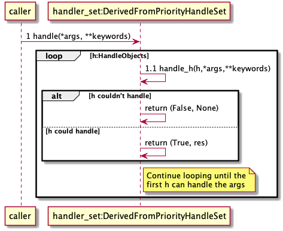

Software Design¶
Priority Handle Set¶
We have a number of places where we want to have a chain-of-responsibility, with the addition of an ordering based on a priority order. We also want to be able to modify the handles, starting with a default set of handles. So for example while reading a NitfFile we would like to process images using a set of handles (e.g., read JPEG 2000, read using numpy arrays, etc.), that we could potentially change for a particular NitfFile (e.g., add a special reader for an unusual format).
To support this, we have a class PriorityHandleSet. This is very similar to a priority queue except that we:
Don’t want to actually pop from a queue, rather we iterate through the stored items.
The items aren’t totally ordered. We iterate through items with the same priority in an arbitrary order
We want to have a default list of handlers, that can then be modified.
The design for this is shown in Fig. 2.
![abstract class PriorityHandleSet {
+add_handle(h, priority_order=0)
+discard_handle(h)
{static} add_default_handle(cls, h, priority_order=0)
{static} discard_default_handle(cls, h, priority_order=0)
{static} default_handle_set()
+handle(*args, **keywords)
{abstract} handle_h(h, *args, **keywords)
}
note top
This class also adds the normal python
magic functions to be able to iterate like
a set.
Higher numbers in the priority order are
returned first.
We also have proper copy semantics, so you
can call copy.copy(t.default_handle_set())
to get a copy of the default set that can be
modified.
end note
class NitfDesHandleSet
note top
Process NitfDes
end note
class NitfImageHandleSet
note right
Process NitfImage
end note
PriorityHandleSet <|-- NitfDesHandleSet
PriorityHandleSet <|-- NitfImageHandleSet](_images/plantuml-77cf57394915f4590f35b53c2e586ba5748f0ad8.png)
Fig. 2 Priority Handle Set¶
The PriorityHandleSet has members for adding and removing “Handles”. A handle is purposely vague, it is any object that the derived class wants to be. And in some cases the object is actually a class - so for example NitfImageHandleSet uses handles that are classes derived from NitfImage.
The function handle forwards work to the function handle_h, as shown in Fig. 3

Fig. 3 handler_set:DerivedFromPriorityHandleSet sequence diagram¶
FieldStruct¶
Another pattern that we run into a lot is a set of fields stored as text in a NitfFile. This occurs in TREs, file header, segment header, and user subheaders. The fields are complicated in that they may involve conditionals, optional parameters, special formatting, and looping.
We implement this using a base class FieldStruct. Note that you are not required to use this base class to have a class that handles a field structure, but often it is useful to do so. But if you provide an alternative class you should provide the same interface.
The FieldStruct class is given a description, which is an array of field rows. For each row, we take a field_name, help description, size, type ‘ty’, and a set of optionally parameters. Rows can be nested with a “loop” structure. So a sample field structure description might be:
[["fhdr", "", 4, str, {"default" : "NITF"}],
["numi", "", 3, int],
[["loop", "f.numi"],
['lish', "", 6, int],
['li', "", 10, int]]
]
The size can be an expression, e.g. “f.foo[i1,i2]”. See NitfField.eval_expr.
The field_name can be the “None” object if this needs to reserve space but isn’t actually a field (e.g., see “USE00A” which has lots of reserved fields). The type might be something like ‘int’, ‘float’ or ‘str’. We convert the NITF string to and from this type.
The optional parameters are:
- frmt
A format string or function
- default
The default value to use when writing. If not specified, the default is all spaces for a str and 0 for a number type.
- hardcoded_value
If True, do not allow the value to be modified. It is set to the default value, and trying to change it gives an error.
- condition
An expression used to determine if the field is included or not.
- optional
If true, a field is optional. Note that this is different than conditional - with conditional the bytes for the field might or might not be present. With optional, they are always present but might be all spaces which indicates the value is not there. If optional is present, we translate all spaces in the NITF file to and from the python “None” object
- optional_char
There are some TREs that use “—–” instead of ” ” to indicate missing data. No idea why they don’t just use ‘ ‘, but if there is a different char you can supply it.
- field_value_class
Most fields can be handled by NitfField class. However there are some special cases (e.g., IXSHD used for image segment level TREs). If we need to change this, we can supply the class to use here. This class should derive from FieldData (or supply the same interface).
- size_offset
In some cases, the ‘size’ is really the size of the data plus something else. For example, in the image header the size of the TRE includes both the TRE and an additional field indicating if we have overflow. You can supply ‘size_offset’ option to specify an offset that should be applied to the size. The offset is subtracted from ‘size’ to give the actual size of this field.
- size_not_updated
See below
- signed
Used by IntFieldData to determine if data is signed or unsigned. Default is False, or unsigned.
The ‘frmt’ can be a format string (e.g., “%03d” for a 3 digit integer), or it can be a function that takes a value and returns a string - useful for more complicated formatting than can be captured with a format string (e.g., file date/time in the format CCYYMMDDhhmmss). The default format for str type is just “%s” and integer is “%d” - you don’t need to specify this if you want the default (note that we already handling padding, so you don’t need to specify something like “%03d” to get 0 filled padding). Floats are more complicated. We have as a default the float_to_fixed_width function. This uses fixed point with the precision set to fit (so 0.00001, 0.00010, 10.0000, through 1000000). This often but not always works, see the NITF documentation for how the floats should be formatted for a particular field.
If size is a string to be evaluated, there are two kinds of behavior we might want when we set a value:
We want to take the size of the value, and use that to fill in the size expression (e.g., if size is “f.foo[i1, i2]” then update that value). This is useful for example for putting TREs in a image header, we don’t know what the size is ahead of time and just want to set this.
We know the size, want to hold this fixed, and trigger an error if we try to set a value other than this size. This is useful for things that are represented as binary data in a TRE, but where the size is know ahead of time (e.g., TreENGRDA).
If size is instead a value (e.g., 10), then we ignore size_not_updated. The default is size_not_updated = False. In all cases, this only applies if we have a field_value_class.
For fields that loop, you can access them like an array, e.g. fs.foo[0,1], and assign like fs.foo[0,1] = 2. Note however that we do not support slices. This is because in general a NITF loop isn’t the same size, and might be missing for some indices (e.g., a conditional isn’t met). It isn’t really clear what a slice means when some of the data might not be there, or when different indices have different dimensions.
The design for this is shown in Fig. 4.
![class FieldStruct {
{static} desc
+field
+pseudo_outer_loop
+init(description=None)
+items(array_as_list=True)
+read_from_file(fh, nitf_literal=False)
+write_to_file(fh)
+update_field(fh, field_name, value, key=())
}
note top
This class is a base class used to
support field structures in Nitf.
Controlled by desc, see description
above of this.
Have __getattr__ and __setattr__
set up to provide access to the
fields listed in desc.
end note
note right of FieldStruct::desc
Use if description passed in
as None in init
end note
note right of FieldStruct::field
Map field name to NitfField
end note
class NitfField {
+field_name
+size_offset
+size_not_updated
+ty
+loop
+frmt
+default
+condition
+optional
+optional_char
+hardcoded_value
+value_dict
+_check_or_set_size
+has_loop
+dim_size
+shape(key)
{static} is_shape_equal(fld1, fld2)
+to_list()
+values()
+items()
+size(key)
+get_print(key)
+check_condition(key)
+get_raw_bytes(key)
bytes(key)
read_from_file(key, fh, nitf_literal=False)
write_to_file(key, fh)
update_file(key, fh)
}
note right
Handles a single field. For looped data,
we treat this as a single field accessed
like an array.
end note
abstract class FieldData {
{abstract} pack(key, val)
{abstract} unpack(key, val)
}
note left
Class to handle generic variable
size data, which in some cases
might be binary data.
Derived classes should supply
a "pack" and "unpack" function to
take the underlying data to and
from bytes. Often derived
classes will also want to supply a
different get_print function.
end note
class StringFieldData
class FloatFieldData
class IntFieldData
class NitfLoop {
+init(fs, parent_loop, desc, field)
+shape(key)
+dim_size
+check_index(key)
+key_subloop(lead)
+keys()
+write_to_file(fh)
+read_from_file(fh, nitf_literal=False)
+to_list(fld)
{static} is_shape_equal(loop1, loop2)
+print_to_fh(fh)
}
note top
This handles a NITF looping
structure.
Because it is convenient, we
have a "null" pseudo loop as
the outer loop. This just
allows us to treat the outer
fields not in a loop the same
way we treat the loops. This
is indicated by having
parent_list None.
The keys of the pseudo loop are
just the list [(),]
end note
FieldStruct o-- "many" NitfField
FieldStruct o-- NitfLoop
NitfLoop o-- "many" NitfField
NitfField <|-- FieldData
FieldData <|-- StringFieldData
FieldData <|-- FloatFieldData
FieldData <|-- IntFieldData](_images/plantuml-72cb4cf1505376c1dd452192fec733a675e6ee3b.png)
Fig. 4 FieldStruct¶
A note on the design, we use to have lots of code that had conditions like “if in loop then do x, if not then do y”. To avoid special code like that, we changed the design so all fields are always in a NitfLoop. We introduced a pseudo outer loop of dimension size 0 that we place all the fields that aren’t in a proper loop. This is really an implementation detail, from outside the internal parts of the code the decision is invisible. But I wanted to make sure to note this, since it might be slightly confusing the first time you look into the internal code. The pseudo outer loop has keys of exactly length 1: [(),]. Since we access our scalar field from a NitfField as fld[()] this usage is consistent.